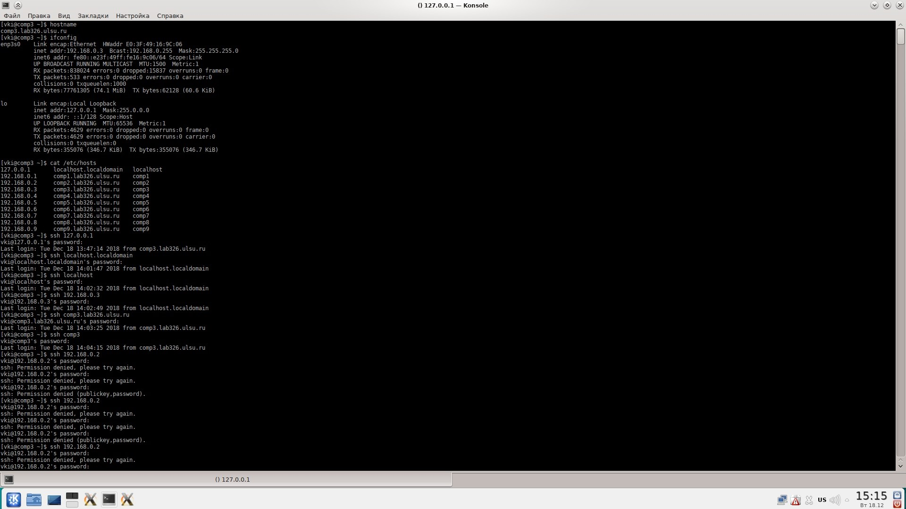
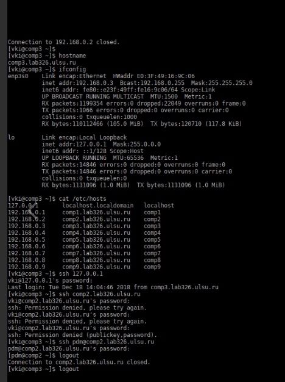

Тема: «Настройка локальной сети в условиях отсутствия DNS»
1. Выполнить необходимые работы по настройке сети на компьютерах лаборатории.
2. Продемонстрировать доступность компьютеров сети с помощью команд:
$ telnet 127.0.0.1
$ telnet localhost.localdomain
$ telnet localhost
$ telnet
$ telnet <полное имя своего компа>
$ telnet
$ telnet
$ telnet <полное имя другого компа>
$ telnet <имя host'а другого компа>
3. Представить отчёт, содержащий описание процесса настройки локальной сети в условиях отсутствия DNS.
Примечание: Если не можете установить telnet, используйте ssh.

